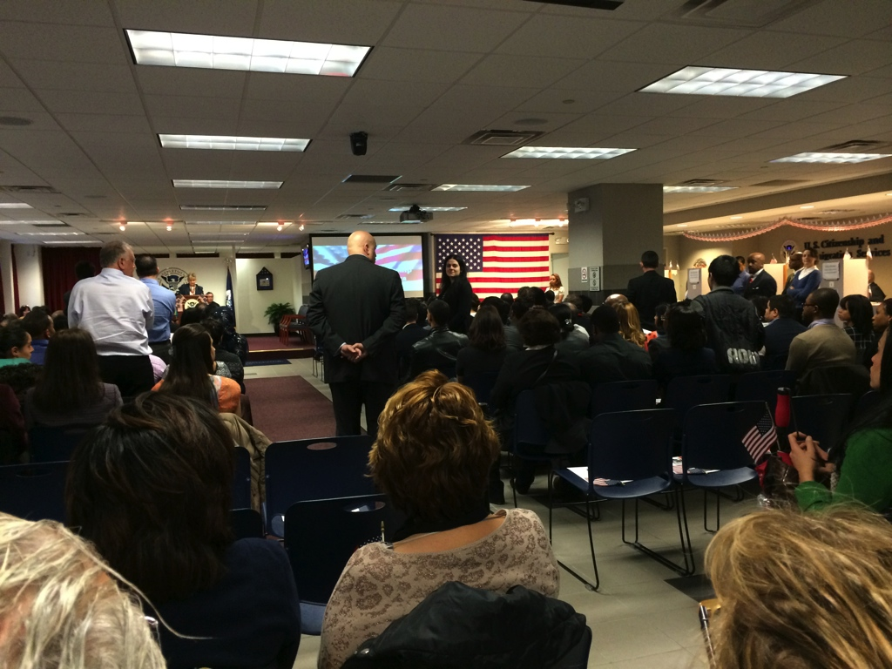
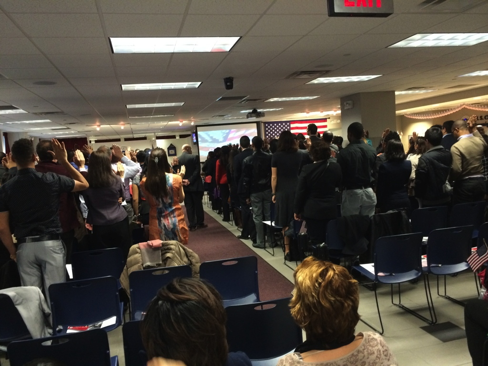
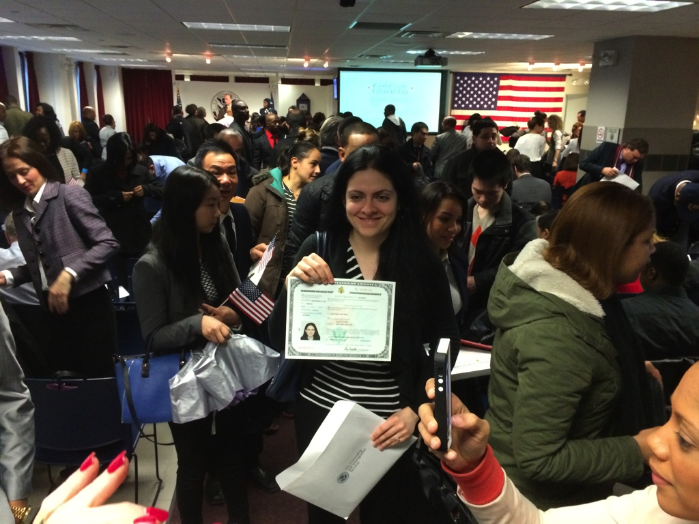
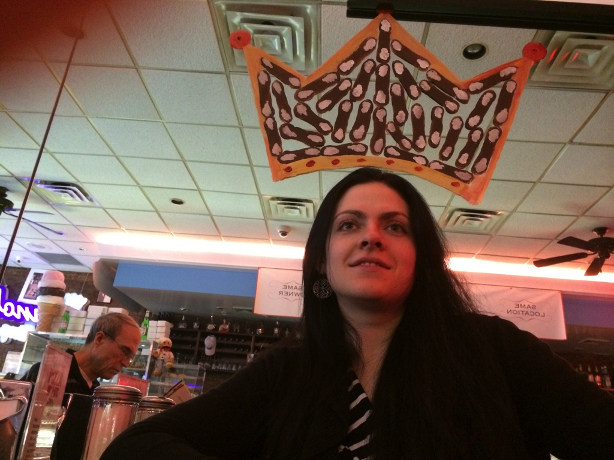
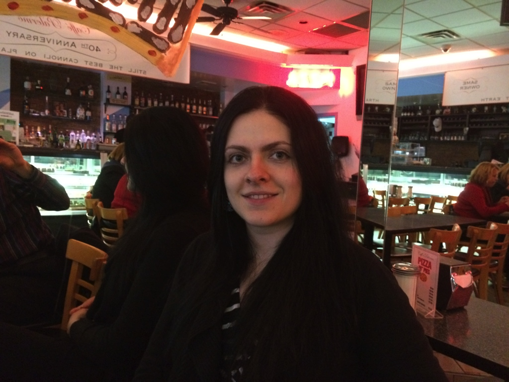

Aliona Becomes a U.S. Citizen - April 4, 2014

The countries of origin for the Americans-to-be are called one by one.
Belarus is called fourth, and Aliona, the sole immigrant from Belarus, bravely stands alone.

The immigrants are asked to raise their hand to take the United States pledge of allegiance for the first time.
The judge presiding over the ceremony speaks to the immigrants.
He proclaims his role an honor, and declares all the immigrants to officially be American citizens.
President Obama speaks to the proud new citizens through a video presentation. All watch intently.
The ceremony ends with a patriotic song and all are encouraged to sing along in celebration.
The new citizens along with onlooking family and friends join together in song, waving little American flags.
Certificates of naturalization are handed out after the ceremony.

Aliona is overjoyed for this process, nearly eight years long, to have finally concluded, resulting in her successfully attaining U.S. citizenship.
Aliona, Scott, and Aliona's soon-to-be parents in law celebrate this achievement
with a prosecco toast and a masterfully prepared lunch in Little Italy.

We finish dinner and raid another cafe for coffee and cannolis.
Scott angles the camera to properly coronate Aliona with the cannoli crown painted on the mirror.

Aliona the American concludes the outing with a far less silly picture.